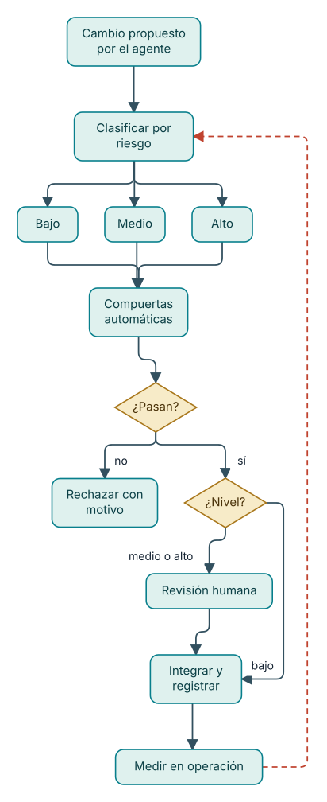
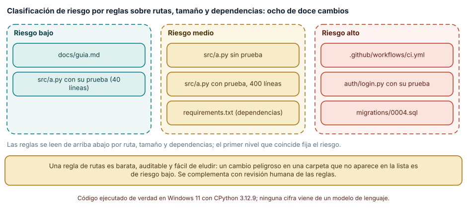
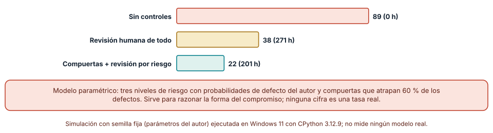
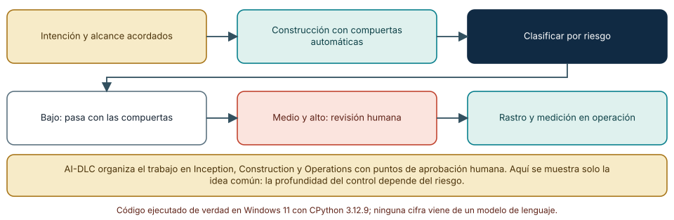

← SE-585 — Observabilidad y evals del propio harness · ↑ Parte 48 · 📚 Índice completo · 🌐 Portal · SE-587 — Taller: diagnosticar el fallo de un harness →
Punto profesional y fundamento pedagógico
Punto profesional. La clase existe para que puedas explicar a una organización qué significa trabajar con agentes *con gobierno* y qué lo separa del *vibe coding*. Hasta aquí el curso trató controles técnicos del harness: instrucciones, permisos, contexto, parada, sandbox, compuertas, coordinación, trazas. Gobernar es decidir cuánto control exige cada cambio según su riesgo, quién aprueba qué, qué queda registrado y cómo se mide el resultado. La diferencia entre desarrollo asistido sin gobierno y agentic engineering no es la herramienta: es que el segundo declara qué se verifica, qué se revisa y quién responde.
Por qué aparece aquí. Sigue a la observabilidad y las evaluaciones (SE-585), que dan los datos para gobernar, y precede al taller (SE-587) y al proyecto (SE-588), que integran todo. Retoma la política de equipo de SE-552 y la lleva al contexto de agentes.
Error conceptual que debe corregir. Creer que gobernar es revisar todo o prohibir. En el modelo paramétrico de la clase, revisar todo cada cambio con un revisor humano deja escapar 38 defectos por cada mil cambios con 271 horas de revisión; un esquema con compuertas automáticas y revisión solo de lo de riesgo medio y alto deja escapar 22 con 201 horas. Revisar más no es controlar mejor: el control se concentra donde el riesgo es mayor.
Secuencia de aprendizaje. Antes de ejecutar, predices qué modo (sin controles, revisión total, compuertas con revisión por riesgo) deja escapar menos defectos y a qué costo en horas; después clasificas doce cambios con reglas deterministas, ejecutas el modelo de tres modos y escribes una política de gobierno de una página.
Evidencia de aprendizaje. gobierno-de-agentes.md con la clasificación de riesgo (reglas y casos), la evidencia exigida por nivel, las aprobaciones humanas, el registro de decisiones y la métrica con la que se revisará la política.
Límite de la conclusión. El modelo usa tres niveles de riesgo con probabilidades de defecto del autor, compuertas que atrapan 60 % y revisores que atrapan 55 %; son supuestos, no tasas medidas. La clasificación por rutas es una regla del autor. No se midió ninguna organización ni la eficacia de ningún marco de gobierno, y las menciones a AI-DLC, NIST AI RMF y *vibe coding* describen lo que dicen sus fuentes. No se invocó ningún modelo.
Trazabilidad fuente → afirmación
| Fuente primaria u oficial | Afirmación que respalda | Lo que no prueba |
|---|---|---|
| AWS, «Open-Sourcing Adaptive Workflows for AI-DLC» | Presenta AI-DLC como un flujo con fases Inception, Construction y Operations, profundidad adaptable y puntos de aprobación humana con trazabilidad de extremo a extremo. | No mide su efecto en productividad ni en calidad. |
| Willison, «Not all AI-assisted programming is vibe coding» | Propone distinguir el uso de un modelo como asistente cuyo código se revisa y entiende del *vibe coding*, donde no se revisa. | Es una posición personal, no una definición normativa. |
| NIST, AI Risk Management Framework | Organiza la gestión de riesgos de IA en funciones de gobierno, mapeo, medición y gestión. | No es específico de desarrollo de software con agentes. |
| OWASP, «LLM06:2025 Excessive Agency» | Recomienda limitar autonomía y exigir aprobación humana para acciones de alto impacto. | No define niveles de riesgo de un cambio de código. |
| Böckeler, «Harness engineering» | Plantea el papel de la persona como quien dirige y mejora el harness a partir de los fallos. | No es una norma de gobierno. |
Antes de empezar
Recupera lo aprendido en SE-552: una política asigna menos evidencia a lo de bajo riesgo y más a lo de alto. La pregunta activa es: si mañana un agente integrara un cambio en tu repositorio sin que nadie lo mirara, ¿cuál sería el peor cambio que podría pasar y qué lo habría detenido?
Prerrequisitos
- Haber completado
SE-552ySE-577aSE-585. - Conocer qué es una aprobación de cambios y un registro de decisiones.
- Python 3.11 o posterior; solo la biblioteca estándar.
Problema auténtico
Dos equipos usan asistentes de código. El primero acepta lo que el asistente propone si «parece bien»; el segundo, con el mismo asistente, clasifica cada cambio por riesgo, exige el menú completo para todos, revisión humana para los de riesgo medio y alto y un registro de quién aprobó qué. Tras un trimestre, el primero ha ido más rápido y ha tenido dos incidentes en producción; el segundo, más lento en los cambios riesgosos y sin incidentes. Nadie puede decir si la diferencia viene del gobierno o de la suerte, pero ambos equipos pueden decir qué harían distinto.
La clase no promete cifras reales. Ofrece una clasificación determinista de riesgo, un modelo explícito de costos y defectos que escapan, y una política escrita que se puede revisar con datos propios (SE-585).
Objetivos observables
Al terminar podrás:
- clasificar cambios por riesgo con reglas deterministas sobre rutas, tamaño y dependencias, y declarar cómo pueden eludirse;
- asignar evidencia y aprobación por nivel de riesgo, con la revisión humana donde más rinde;
- explicar con qué criterio una organización distingue *vibe coding* de ingeniería agéntica: qué se verifica, qué se revisa y quién responde;
- describir AI-DLC y el marco de gestión de riesgos de NIST sin atribuirles resultados que sus fuentes no miden;
- escribir una política de gobierno de una página con el registro de decisiones y la métrica de revisión.
Mapa conceptual

El mapa es un embudo con dos puertas: las compuertas automáticas para todos y la revisión humana para lo medio y alto. El lazo final (medir en operación) devuelve información a la clasificación: una política se ajusta con lo que escapó.
Temas y por qué importan
| Tema | Por qué cambia una decisión profesional | Evidencia mínima |
|---|---|---|
| Clasificación de riesgo | Decide cuánto control recibe cada cambio. | Reglas y casos de prueba |
| Evidencia por nivel | Evita revisar todo igual. | Tabla nivel → evidencia |
| Aprobación humana | Concentra la atención donde el costo del error es mayor. | Quién aprueba cada nivel |
| *Vibe coding* frente a agentic engineering | Separa uso sin revisión de uso verificado. | Criterio escrito |
| AI-DLC | Un flujo con fases, profundidad adaptable y aprobaciones. | Descripción con límites |
| Registro y medición | Sin ellos la política no se corrige. | Registro de decisiones y métrica |
Conceptos y decisiones
1. Gobierno es proporcionalidad
Gobernar el desarrollo con agentes es decidir cuánto control reciben distintos cambios. La proporcionalidad es la idea central de los marcos de riesgo: NIST organiza la gestión del riesgo de IA en funciones (gobernar, mapear, medir y gestionar) y su valor para esta clase es la secuencia, no el catálogo: se define quién decide, se identifica qué puede salir mal, se mide y se actúa. OWASP, por su parte, recomienda limitar la autonomía de un agente y exigir aprobación humana para acciones de alto impacto. Ambos coinciden en la forma: más control donde el daño potencial es mayor.
2. Clasificar el riesgo con reglas
Una clasificación determinista usa señales que un programa puede leer: qué rutas toca (.github/, infra/, auth/ y migrations/ son de riesgo alto; documentación, de bajo), cuántas líneas cambia, si modifica dependencias, si toca código sin tocar pruebas. En el ejemplo, de doce cambios, cuatro son de riesgo bajo, cuatro medio y cuatro alto. Las reglas son baratas, auditables y reproducibles; también son eludibles: un cambio peligroso en una ruta que no figura en la lista se clasifica bajo. Se complementan con la revisión humana de las propias reglas y con reglas conservadoras (ante la duda, el nivel superior).
3. Evidencia y aprobación por nivel
Para cada nivel se define una evidencia mínima y una aprobación. Por ejemplo: bajo, el menú completo en verde (SE-583) y registro; medio, el menú completo, la traza de la sesión y una revisión humana del cambio; alto, todo lo anterior, una segunda persona, y un plan de reversión (SE-582). La evidencia sube de nivel en nivel y la aprobación humana se concentra donde importa. En el modelo de la clase, esa concentración recorta el trabajo de revisión de 271 a 201 horas por mil cambios y reduce los defectos que escapan de 38 a 22 porque las compuertas automáticas cubren a todos.
4. *Vibe coding* y agentic engineering
Willison propone reservar *vibe coding* para el uso de un modelo en que no se revisa el código, y llamar de otra forma al uso en que el código se revisa, prueba y entiende. Adoptemos esa distinción como criterio operativo: la diferencia no es qué herramienta se usa, sino qué se verifica, qué se revisa y quién responde. El *vibe coding* es razonable para prototipos desechables donde nadie depende del resultado; es un problema cuando lo que se produce entra en un sistema que otros usan sin que nadie haya verificado ni entendido el código. La ingeniería agéntica declara lo contrario: cada cambio pasa por compuertas, y los de riesgo tienen una persona que lo entiende y firma.
5. AI-DLC como ejemplo de flujo gobernado
AWS publicó AI-DLC (AI-Driven Development Life Cycle) como un flujo que parte de una intención del desarrollador y organiza el trabajo en tres fases (Inception, Construction y Operations), con la profundidad de cada etapa adaptada al problema, aprobaciones humanas en los puntos de decisión y trazabilidad de artefactos, decisiones y conversaciones. Es un ejemplo de un flujo con control proporcional y registro de decisiones. La fuente es una publicación del proveedor que presenta el diseño y no mide su efecto en productividad ni en calidad; se estudia como forma de organizar el gobierno, no como evidencia de que funcione.
6. Registro y revisión de la política
Una política que nadie mide no se corrige. Se registra, para cada cambio integrado, el nivel de riesgo asignado, la evidencia presentada y quién aprobó; se mide cuántos defectos escaparon por nivel (incidentes, reversiones) y cuántas horas de revisión se gastaron. Con esos datos se ajustan las reglas: un defecto en un cambio de riesgo bajo es un caso nuevo para el clasificador. Es el mismo ciclo de SE-585 aplicado a la política en vez de al harness.
Una clasificación y un modelo de tres modos
La clasificación es determinista, con reglas sobre rutas, tamaño y dependencias, y se aplicó a doce cambios del autor. El modelo paramétrico usa 20 000 cambios con semilla 502: probabilidades de nivel 70 %, 25 % y 5 %; de defecto 5 %, 15 % y 35 %; compuertas que atrapan 60 % y revisión humana que atrapa 55 %.

Cómo leer la figura. Cada columna es un nivel de riesgo y contiene los cambios que las reglas le asignan, de bajo a alto. Mira primero qué rutas llevan al riesgo alto (workflow, autenticación, migración) y que una ruta fuera de la lista caería en el nivel bajo. Dónde deja de valer: las reglas son del autor y no han visto cambios adversos; un cambio de riesgo alto escrito en una ruta no listada pasa como bajo. La revisión humana de las reglas es parte de la política.

Cómo leer la figura. Cada barra es un modo de trabajo; el rótulo añade las horas de revisión por mil cambios. El tercero escapa menos y cuesta menos horas que el segundo porque las compuertas automáticas cubren a todos y la revisión humana se concentra donde la probabilidad de defecto es mayor. Dónde deja de valer: el resultado es consecuencia de los parámetros; con compuertas que atrapan 20 %, la ventaja del tercer modo casi desaparece. La figura enseña cómo razonar el compromiso, no qué valores tiene.

Cómo leer la figura. Seis cajas recorren el ciclo: acordar el alcance, construir con compuertas, clasificar, decidir el nivel de control y registrar y medir. Dónde deja de valer: es una simplificación común a varios flujos, entre ellos AI-DLC; no reproduce sus etapas ni su vocabulario, y no sustituye la lectura de su documentación.
Definiciones de trabajo
- Gobierno: conjunto de decisiones sobre quién aprueba qué y con qué evidencia.
- Nivel de riesgo: categoría del cambio según el daño potencial.
- Proporcionalidad: más control donde el daño potencial es mayor.
- ***Vibe coding*:** uso de un modelo para generar código sin revisarlo ni entenderlo.
- Agentic engineering: desarrollo con agentes bajo compuertas, revisión por riesgo y registro.
- Registro de decisiones: historial de quién aprobó qué, con qué evidencia.
Ejemplo mínimo
Una clasificación de riesgo por rutas en pocas líneas:
def nivel(rutas: list[str], lineas: int, toca_dependencias: bool) -> str:
if any(r.startswith((".github/", "infra/", "auth/", "migrations/")) for r in rutas):
return "alto"
sin_prueba = any(r.startswith("src/") for r in rutas) and not any(r.startswith("tests/") for r in rutas)
if toca_dependencias or lineas > 300 or sin_prueba:
return "medio"
return "bajo"Con [".github/workflows/ci.yml"] devuelve alto; con ["src/a.py"] sin prueba, medio; con ["docs/guia.md"], bajo. Las reglas se prueban con casos como cualquier otra regla mecánica (SE-578).
Ejemplo profesional
*Escenario ilustrativo: las cifras y los resultados que aparecen en este ejemplo son supuestos de la narración, no mediciones.*
El equipo escribe su política en una página: tres niveles, la evidencia y la aprobación de cada uno, y la regla de que ningún cambio de riesgo alto se integra sin dos personas y un plan de reversión. Al segundo mes registra un incidente en un cambio clasificado como bajo: una modificación de documentación que alteraba un archivo de configuración incluido en el sitio. Añade la regla («los archivos incluidos en el sitio se tratan como medios») y el caso al conjunto de pruebas del clasificador. La política es otra pieza del harness que se mide y se corrige. Lo que el equipo no puede afirmar es qué parte de la reducción de incidentes se debe a la política y qué parte a que el asistente mejoró.
Práctica guiada
- Clasifica por riesgo los últimos veinte cambios de tu repositorio con reglas escritas, y revisa tres que clasificaste distinto a mano.
- Define la evidencia y la aprobación de cada nivel.
- Ejecuta
python scripts/experiments_part48_b.py 502y cambia los parámetros del modelo para ver cuándo deja de convenir el tercer modo. - Escribe la política de una página con el registro y la métrica.
- Elige un caso donde el *vibe coding* sea aceptable en tu organización y escribe el criterio que lo permite.
Ejercicios
- Básico. Explica por qué la revisión humana de todo deja escapar más defectos que las compuertas con revisión por riesgo en este modelo.
- Intermedio. Cambia la eficacia de las compuertas de 60 % a 30 % y describe qué pasa con la ventaja del tercer modo.
- Avanzado. Propón tres reglas de clasificación que un agente podría eludir sin mala fe y cómo las endurecerías.
Reto verificable
Entrega gobierno-de-agentes.md con: la clasificación de riesgo con sus reglas y al menos diez casos de prueba, la tabla de evidencia y aprobación por nivel, el criterio para distinguir *vibe coding* de ingeniería agéntica, el registro de decisiones y la métrica con que se revisará la política. Es válido si otra persona clasifica los mismos cambios con tus reglas y obtiene los mismos niveles.
Caso conductor
La política de *Avisos* extiende a agentes la de SE-552: los cambios del asistente se clasifican por riesgo, pasan el menú de SE-583 y se revisan según el nivel. Sus reglas de clasificación viven en el repositorio y se prueban como las demás. La política es la entrada del proyecto de SE-588.
Preguntas frecuentes
¿El *vibe coding* está prohibido?
No. Es una práctica legítima para prototipos desechables y exploración. El problema es dejar que entre sin verificación en algo que otros usan; la política declara dónde se permite y dónde no.
¿AI-DLC reemplaza a mi proceso?
No hay evidencia en la fuente de que lo haga mejor; es un flujo publicado por un proveedor, con ideas útiles (fases, profundidad adaptable, aprobaciones y trazabilidad). Se adaptan las ideas que encajan.
¿Quién responde si el agente se equivoca?
La persona o el equipo que aprobó la integración y la organización que lo desplegó. El agente no es responsable en ningún sentido jurídico ni profesional; la política debe nombrar a quien responde por cada nivel.
¿Hay que medir la productividad?
Medir tiempos y horas de revisión es útil para ajustar la política; atribuirlos a individuos o compararlos sin control es engañoso. Esta clase no midió productividad.
Fallo controlado y diagnóstico
Fallo. Un cambio de dependencias entra clasificado como medio, con revisión humana, y llega a producción con una versión vulnerable de una biblioteca.
Diagnóstico paso a paso. (1) El clasificador detectó el cambio de dependencias y asignó riesgo medio. (2) La revisión humana verificó que las pruebas pasaban y el código funcionaba. (3) Nadie consultó una base de vulnerabilidades. (4) La causa es que la evidencia exigida para ese nivel no incluía un análisis de dependencias.
Corrección. Se añade al menú una compuerta de dependencias y se sube de nivel el cambio que las toca. La lección es que un nivel de riesgo se define por la evidencia que exige, y que una política se corrige con sus incidentes.
Errores comunes y cómo corregirlos
- Revisar todo igual. Síntoma: fatiga y revisiones superficiales. Corrección: concentrar la revisión por riesgo.
- Clasificar solo por tamaño. Síntoma: cambios pequeños y peligrosos que pasan. Corrección: rutas y tipo de cambio.
- Una política sin registro. Síntoma: no se puede corregir. Corrección: registrar nivel, evidencia y aprobador.
- **Llamar *vibe coding* a todo uso de agentes.** Síntoma: debates sin criterio. Corrección: definir por verificación y revisión.
- Atribuir resultados a un marco sin evidencia. Síntoma: «AI-DLC redujo los incidentes». Corrección: separar descripción de medición.
Entorno y archivos clave
scripts/experiments_part48_b.py: clasificación y modelo de tres modos; se ejecuta conpython scripts/experiments_part48_b.py 502.AGENTS.mdydocs/PEDAGOGICAL-STANDARD.mdde este repositorio: ejemplo de reglas de gobierno con validadores.- Semilla fija 502; 20 000 cambios.
- Solo la biblioteca estándar.
Seguridad, ética y accesibilidad
Una política de gobierno debe nombrar a quien responde por cada nivel; diluir la responsabilidad en «el agente» es un error ético y, a menudo, legal. Los registros de decisiones pueden contener datos de personas; trátalos con las reglas de acceso del proyecto. Las exigencias regulatorias (por ejemplo, sobre sistemas de IA) dependen de la jurisdicción y del uso; esta clase no las cubre ni las interpreta. Las figuras son tablas, barras y diagramas con texto alternativo completo; ninguna información depende solo del color.
Puente hacia el trabajo con agentes
Dile al agente el nivel de riesgo de su tarea y la evidencia que debe entregar, y exige que su resumen cite el resultado del menú y la traza; el nivel lo decide el harness, no el agente. Para cambios de nivel medio o alto, la persona revisora lee el diff, no el resumen del agente. El patrón que falla es aceptar el resumen del agente («todo verificado») sin la salida del menú, o dejar que el agente clasifique su propio cambio.
Transferencia
Escribe la política de una página para tu equipo: tres niveles, las reglas que los clasifican, la evidencia por nivel, quién aprueba y qué se registra. Aplícala retroactivamente a los últimos treinta cambios y cuenta cuántos habrían recibido más o menos control del que tuvieron; los desajustes son la primera agenda de mejora.
Evaluación y evidencia
| Criterio | Evidencia aceptable | Rechazo |
|---|---|---|
| Clasificación | Reglas con casos de prueba | «Depende del criterio» |
| Evidencia por nivel | Tabla nivel → evidencia y aprobador | Todo igual |
| *Vibe coding* | Criterio por verificación y revisión | Definición por herramienta |
| Descripción de marcos | Atribuida a su fuente con su límite | Resultados no medidos |
| Registro y métrica | Qué se registra y cómo se revisa | Sin medición |
Fuentes
- AWS. «Open-Sourcing Adaptive Workflows for AI-Driven Development Life Cycle (AI-DLC)».
- Willison, S. «Not all AI-assisted programming is vibe coding (but vibe coding rocks)».
- NIST. AI Risk Management Framework.
- OWASP Gen AI Security Project. «LLM06:2025 Excessive Agency».
- Böckeler, B. «Harness engineering for coding agent users».
Límites y siguiente paso
Se clasificaron doce cambios con reglas del autor y se simularon 20 000 con parámetros del autor y semilla 502, en Windows 11 con CPython 3.12.9. No se midió ninguna organización, ni el efecto de AI-DLC, ni la eficacia de ningún marco, ni la productividad. El siguiente paso, SE-587, es un taller: diagnosticar seis fallos inyectados en el harness a partir de su traza.
Glosario
| Término | Definición breve |
|---|---|
| Gobierno | Decisiones sobre quién aprueba qué y con qué evidencia |
| Nivel de riesgo | Categoría del cambio según el daño potencial |
| Proporcionalidad | Más control donde el daño potencial es mayor |
| Vibe coding | Generar código con un modelo sin revisarlo ni entenderlo |
| Agentic engineering | Desarrollo con agentes bajo compuertas, revisión y registro |
| Registro de decisiones | Historial de quién aprobó qué con qué evidencia |
← SE-585 — Observabilidad y evals del propio harness · ↑ Parte 48 · 📚 Índice completo · 🌐 Portal · SE-587 — Taller: diagnosticar el fallo de un harness →